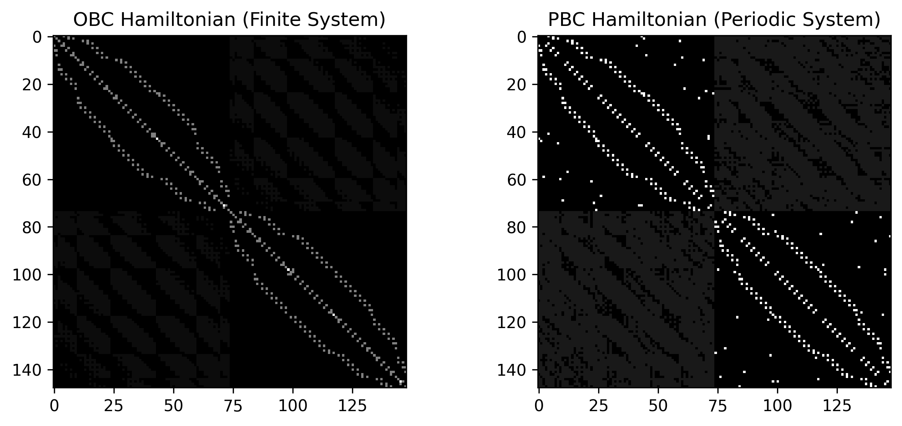

Simulating Lattices: OBC vs. PBC
In this section, you will learn how to simulate both Periodic Boundary Conditions (PBC) and Open Boundary Conditions (OBC) using MoirePy. Understanding the transition between these two is vital for distinguishing between bulk properties and edge-specific phenomena.
1. Physical Difference: Bulk vs. Flake
- PBC (
pbc=True): Represents an infinite periodic system. Atoms at the boundary "wrap around" to connect with atoms on the opposite side of the moiré unit cell, simulating an endless bulk material. - OBC (
pbc=False): Represents a finite flake or nanostructure. Atoms at the boundaries have fewer neighbors because the lattice physically ends, creating edges.
2. Minimal Setup
We define the same lattice geometry once, toggling only the pbc flag to see how it changes the connectivity.
import numpy as np
import matplotlib.pyplot as plt
from moirepy import BilayerMoireLattice, HexagonalLayer
# Parameters for a ~9.43 degree twist
params = {
"latticetype": HexagonalLayer,
"ll1": 3, "ll2": 4, "ul1": 4, "ul2": 3,
"n1": 1, "n2": 1
} # yes, u can do this in python
# 1. Open Boundary Conditions (Finite Flake)
lattice_obc = BilayerMoireLattice(**params, pbc=False)
# 2. Periodic Boundary Conditions (Infinite Bulk)
lattice_pbc = BilayerMoireLattice(**params, pbc=True)
3. Hamiltonian and Connectivity
The internal logic for finding neighbors changes significantly. In PBC, MoirePy uses a KDTree on a set of "ghost" atoms (bigger lattice) to ensure that atoms near the edge find their counterparts on the other side.
# Generate Hamiltonians with identical hopping parameters
ham_obc = lattice_obc.generate_hamiltonian(tll=1.0, tuu=1.0, tul=0.1, tlu=0.1)
ham_pbc = lattice_pbc.generate_hamiltonian(tll=1.0, tuu=1.0, tul=0.1, tlu=0.1)
print(f"OBC Non-zero entries: {ham_obc.nnz}") # 6062
print(f"PBC Non-zero entries: {ham_pbc.nnz}") # 9728
Info
In PBC, an atom at the far right edge connects to a neighbor at the far left edge. MoirePy handles this mapping automatically. You don't need to manually calculate wrapped coordinates. This results in a higher number of non-zero entries (nnz) in the PBC Hamiltonian.
4. Visual Comparison (Hamiltonian Structure)
Let's plot the hamiltonian matrices and let's see how they look like:
plt.imshow(ham_obc.toarray(), cmap="gray")
plt.imshow(ham_pbc.toarray(), cmap="gray")

5. Spectrum Comparison
The choice of boundary conditions significantly affects the energy eigenvalues. OBC introduces "edge states" that may appear in gaps where the bulk (PBC) system has no states.
from scipy.sparse.linalg import eigsh
def get_spectrum(ham):
# Get 100 eigenvalues near zero energy
vals = eigsh(ham, k=100, which='LM', sigma=0, return_eigenvectors=False)
return np.sort(vals)
spec_obc = get_spectrum(ham_obc)
spec_pbc = get_spectrum(ham_pbc)
plt.plot(spec_obc, 'ro', label='OBC (Edges)', markersize=4)
plt.plot(spec_pbc, 'k.', label='PBC (Bulk)', markersize=4)
plt.legend()
plt.ylabel("Energy")
plt.title("Spectrum Comparison")
plt.show()

What We Did
- Constructed the same lattice with OBC and PBC
- Observed how connectivity changes at the boundaries
- Compared Hamiltonians and resulting spectra
This demonstrates how boundary conditions control whether you simulate a finite system or an infinite periodic system.
Next Steps
- K-Space & Band Structures: Work in momentum space for periodic systems.
- Defining Custom Layers: Build your own lattice geometries.
- Designing Custom Hopping: Add realistic physics.
- Tutorials and Replicated Papers: See full physical results.